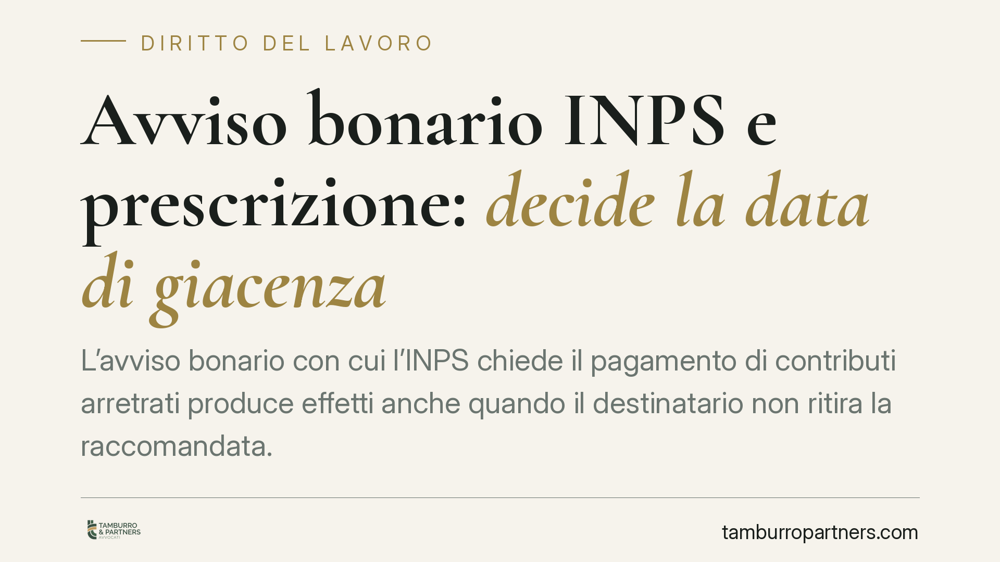

Avviso bonario INPS e prescrizione: decide la data di giacenza
L'avviso bonario con cui l'INPS chiede il pagamento di contributi arretrati produce effetti anche quando il destinatario non ritira la raccomandata. Una recente ordinanza della Cassazione chiarisce che la prescrizione si interrompe già alla data dell'avviso di giacenza, senza attendere i termini previsti per gli atti impositivi. Una differenza di pochi giorni che, a ridosso della prescrizione quinquennale, può risultare decisiva.

Il caso
Un datore di lavoro contesta all'INPS la prescrizione di un credito contributivo. L'Istituto gli aveva inviato un avviso bonario tramite raccomandata, ma la busta non era stata ritirata: il destinatario risultava assente e la corrispondenza era rimasta in giacenza presso l'ufficio postale.
La questione è tutta nel momento in cui l'avviso produce effetto interruttivo. Se vale la data dell'avviso di giacenza, la prescrizione risulta tempestivamente interrotta. Se invece si dovesse attendere il decorso dei dieci giorni previsti per il perfezionamento di certe notifiche, il credito sarebbe estinto.
Inquadramento normativo
I contributi previdenziali si prescrivono in cinque anni (art. 3, commi 9 e 10, L. 335/1995). Trascorso tale termine senza un valido atto interruttivo, il credito dell'INPS non è più esigibile.
Il punto decisivo è la natura dell'avviso bonario. Non si tratta di un atto impositivo soggetto alle regole di notifica della L. 890/1982, bensì di un atto stragiudiziale recettizio: un atto, cioè, che produce effetti nel momento in cui giunge nella sfera di conoscibilità del destinatario.
Per questi atti opera l'art. 1335 c.c., secondo cui la dichiarazione diretta a una determinata persona «si reputa conosciuta nel momento in cui giunge all'indirizzo del destinatario». La norma pone una presunzione di conoscenza: non serve la prova dell'effettiva lettura, basta che l'atto sia arrivato all'indirizzo corretto.
Perché la distinzione conta
La differenza tra atto stragiudiziale recettizio e atto impositivo notificato non è formale. Gli atti impositivi notificati tramite raccomandata secondo la L. 890/1982 si perfezionano, in caso di irreperibilità, solo dopo il decorso di un termine di giacenza (dieci giorni). Per gli atti stragiudiziali, invece, la presunzione dell'art. 1335 c.c. opera già alla data in cui la corrispondenza è disponibile presso l'ufficio postale, documentata dall'avviso di giacenza.
Se l'avviso bonario fosse stato trattato come un atto impositivo, quei pochi giorni avrebbero spostato in avanti l'effetto interruttivo. A ridosso del quinquennio, è proprio questo scarto a determinare l'estinzione o la sopravvivenza del credito.
La Cassazione, con una recente ordinanza della Sezione Lavoro, ha confermato l'orientamento che riconduce l'avviso bonario alla categoria degli atti stragiudiziali: l'effetto interruttivo si colloca alla data dell'avviso di giacenza.
Lo spazio difensivo
La presunzione dell'art. 1335 c.c. non è assoluta. Lo stesso articolo riconosce al destinatario la possibilità di provare di essere stato, senza sua colpa, nell'impossibilità di avere notizia dell'atto. È un onere probatorio rigoroso: non basta l'assenza occasionale, occorre dimostrare una situazione oggettiva e incolpevole (ad esempio un ricovero, un trasferimento documentato, un errore imputabile al servizio postale).
Rimane inoltre aperto il controllo sulla regolarità formale dell'iter postale: l'indirizzo deve essere quello corretto del destinatario e la giacenza deve risultare correttamente attestata. Vizi su questi passaggi possono incidere sulla validità della presunzione.
Implicazioni pratiche
Per datori di lavoro e contribuenti il messaggio è chiaro: la mancata ricezione materiale della raccomandata non neutralizza l'effetto interruttivo. L'INPS non è tenuto ad attendere il ritiro né i termini propri degli atti impositivi.
Chi intende eccepire la prescrizione deve quindi ricostruire con precisione la sequenza temporale e verificare se, alla data dell'avviso di giacenza, il quinquennio fosse già decorso. La difesa si gioca sui dettagli: date, indirizzi, attestazioni postali.
Cosa fare in concreto
- Verifica la regolarità della notifica: indirizzo del destinatario, correttezza dell'avviso di giacenza e completezza della documentazione postale.
- Ricostruisci il calendario della prescrizione, individuando il dies a quo dei contributi contestati e la data di ciascun atto interruttivo.
- Confronta la data dell'avviso di giacenza con la scadenza del quinquennio per valutare la tempestività dell'interruzione.
- Raccogli, se esistente, la documentazione idonea a dimostrare l'impossibilità incolpevole di avere notizia dell'atto ex art. 1335 c.c.
- Conserva ogni comunicazione dell'Istituto in originale, utile in caso di successiva iscrizione a ruolo.
Disclaimer
Contributo informativo a cura di Tamburro & Partners Avvocati. Non costituisce parere legale.
Ogni storia di lavoro ha i suoi tempi.
Se gestisci HR e vuoi un confronto su contenzioso, ispezioni o licenziamenti, scrivi allo studio. Ti rispondiamo entro un giorno lavorativo.